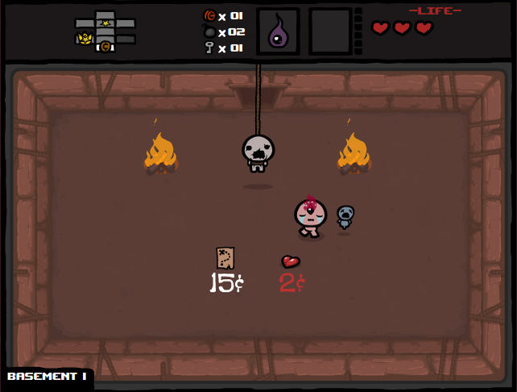
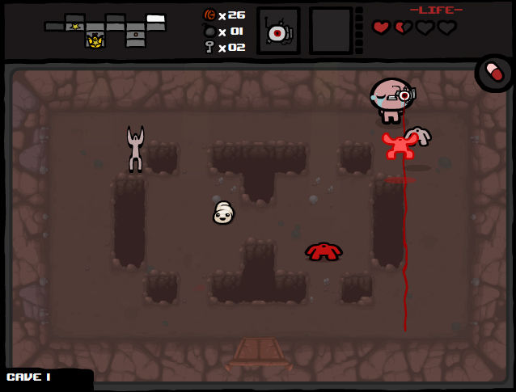
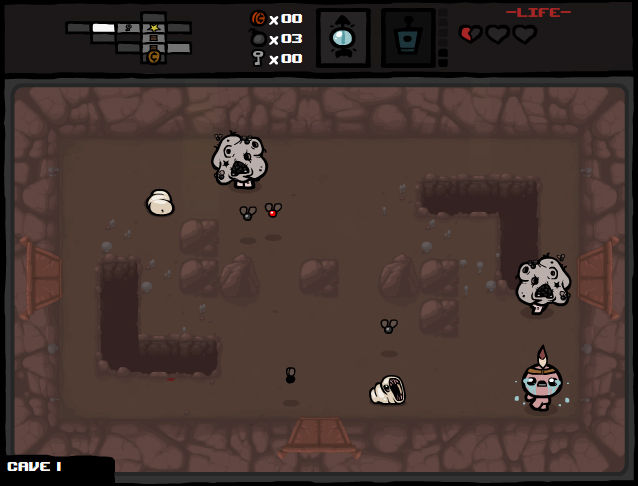
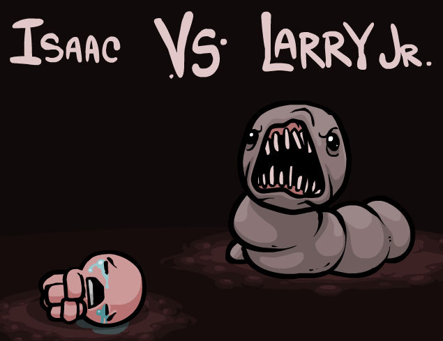
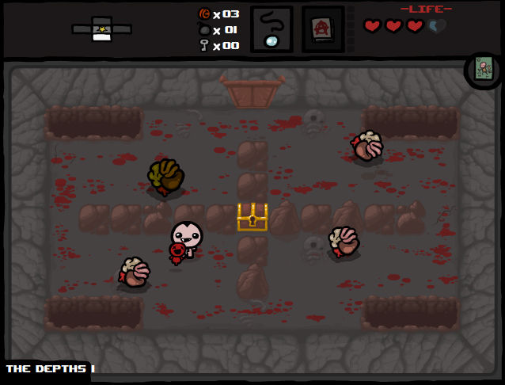
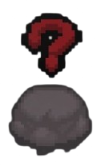

Sobre o jogo
The Binding of Isaac é um jogo de ação e tiro com elementos de roguelike. Isaac foge da mãe, enfrenta criaturas e chefes e encontra itens estranhos que mudam seu corpo e lhe dão poderes. Este catálogo reúne os 100 itens do jogo base de 2011, sem a expansão Wrath of the Lamb.
O jogo
Lançado em 28/09/2011 por Edmund McMillen e Florian Himsl, em Flash.
Versão vanilla
Só o jogo base, sem os itens da expansão Wrath of the Lamb.
Ativos e passivos
Ativos vão ao botão de espaço e recarregam por salas; passivos valem o jogo todo.
Itens em destaque
Vídeo do jogo
Imagens do jogo






Ver os 100 itensPesquise, filtre por ativos e passivos e veja o efeito de cada item.